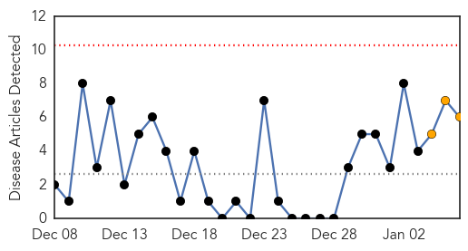
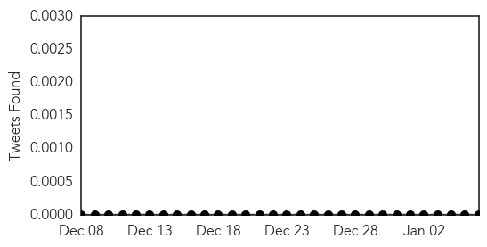

30 Day Trends
Web: 0 alerts, 3 warnings
Twitter: 0 alerts, 0 warnings
Top Articles:
- 0.976
- Negative Measles Tests End Threat in Pennsylvania
- 0.963
- 12-year study confirms overall safety of measles vaccines
- 0.961
- Measles alert follows RMIT graduation ceremony
- 0.824
- Dozens of pandas quarantined after virus kills two at Chinese facility
- 0.768
- Measles outbreak at RMIT graduation.
- 0.729
- Health alert issued after two contract measles at Australian university graduation ceremony
Top Tweets:
-
No tweets found for Jan 06, 2015
Web/News Articles
Tweets
Article Locations